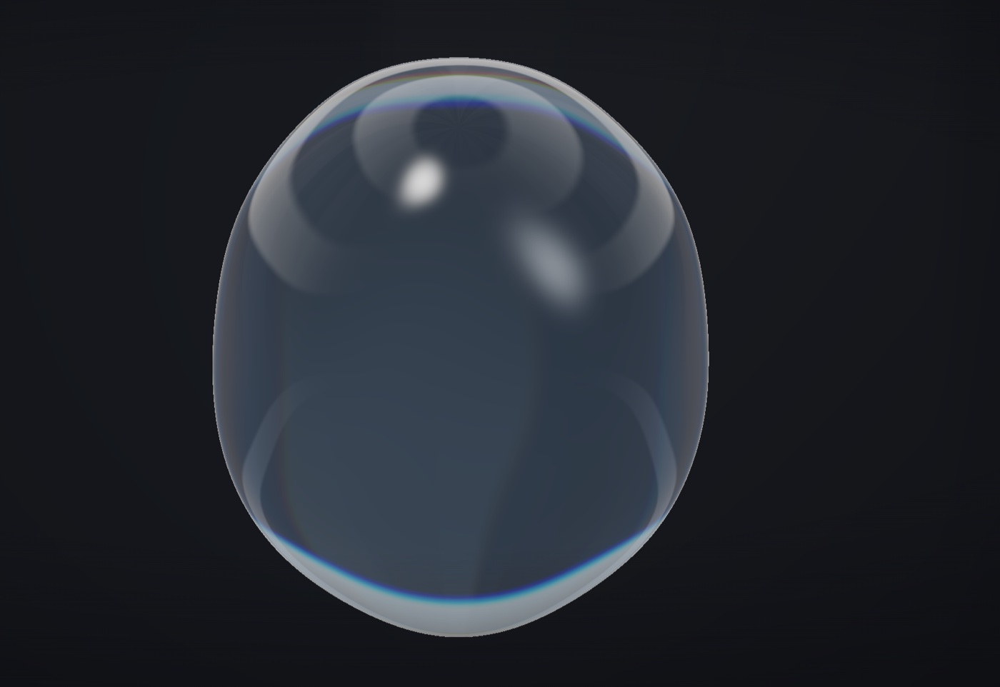
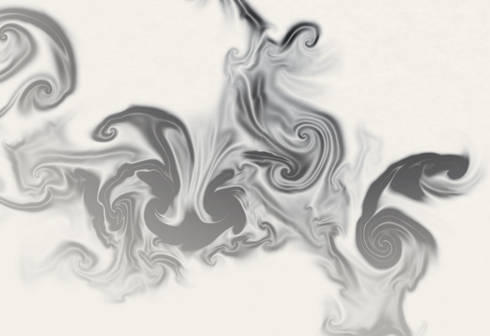

止まった絵では、
伝わらない。
つくったもの

酒は、注ぐたびに違う形になる。止まった写真では消えてしまうその一瞬を、画面の中で描き続けています。
開いて動かす
紙に落ちた墨は、にじみながら形を決めていく。その途中を、そのまま画面に置きました。
開いて動かす※ [001] 凛・[002] 墨 は、実在しないブランドのために制作した自社作品です。実際のお客様の案件ではありません。
おわたしするもの
動くコンセプトサイト
ブランドの核をひとつ決めて、そこからしか出てこない動きをつくります。背景は動画ではなく、その場での計算です。SNS用の縦動画を1本おつけします。
お店・教室のホームページ
スマホでの読みやすさと、お問い合わせまでの短さを最優先に組みます。文章・教室一覧・写真は、公開後もご自身で差し替えられる作りにしています。
SNS用の縦動画
1本ずつ手で編集するのではなく、設計図から書き出しています。同じ品質のものを、続けて出せる作りです。
この画面で起きていること
背景は、動画ではありません
読み込んでいる映像ファイルはありません。1秒に何十回も、その瞬間の色を計算して描いています。だから同じ画面は二度と出ません。
スクロールが滑るのは、慣性です
指を離したあとも少し流れて止まります。紙をめくる速度に近づけると、読む速度がゆっくりになり、文章が届きやすくなります。
文字は、行ごとに立ち上がります
画面に入った瞬間ではなく、読み手の視線が届く位置で出します。動かすこと自体が目的ではありません。
重さは、増やしていません
背景を動画にすると数MBかかります。計算で描けば数十KBで済みます。動くのに軽い、が条件です。
お店向けのサンプル
ひなた珈琲店
挽きたての粉が、光の中を舞う（粒子）
炭火焼鳥 とり福
熾火が明滅し、熱が隣へ移る（熱の計算）
琉球酒場 なんくる
グラスの底に光が集まる（水面の屈折）
ヨガスタジオ 凪
4秒吸って6秒吐く。写真は0枚（呼吸の周期）
整体院 結
絡んだ線がほどけていく。写真は0枚（物理）
Lab の詳しい説明
料金・進め方・よくあるご質問
※ 掲載しているお店はすべて架空です。実在の店舗・団体とは関係ありません。
5枚とも、背景に使っている技術を変えています。同じ作り方を繰り返すと、
見る人にはすべて同じに見えるためです。凪と結には、写真を1枚も使っていません。